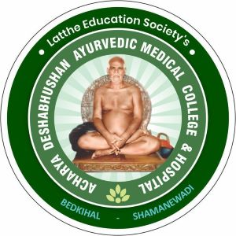

Latthe Education Society's
Acharya Deshabhushan Ayurvedic Medical
College & Hospital
Bedkihal-Shamanewadi - 591214.
Acharya Deshabhushan Ayurvedic Medical
College & Hospital
Bedkihal-Shamanewadi - 591214.


Silver oak
Botanical Name :
Family Name :
Local Name :
Vernacular Name :
Habitat :
Morphology :
Useful Parts :
Chemical Constituents :
Actions :
Properties :
Uses :